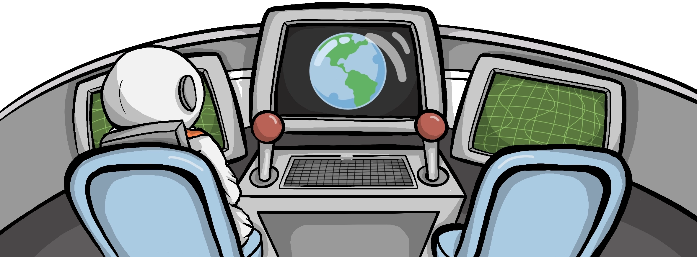
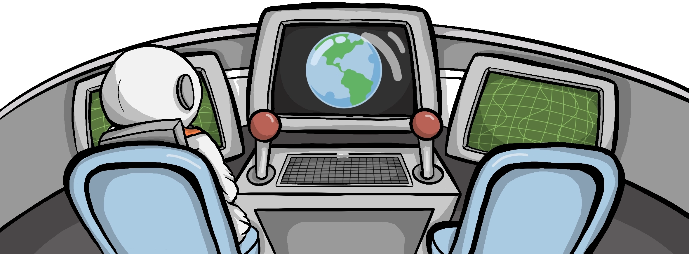

Wow!
A huge comet just flew past us!
I guess that makes sense when Jupiter is known as a ‘Comet catcher’!
 


A huge comet just flew past us!
I guess that makes sense when Jupiter is known as a ‘Comet catcher’!